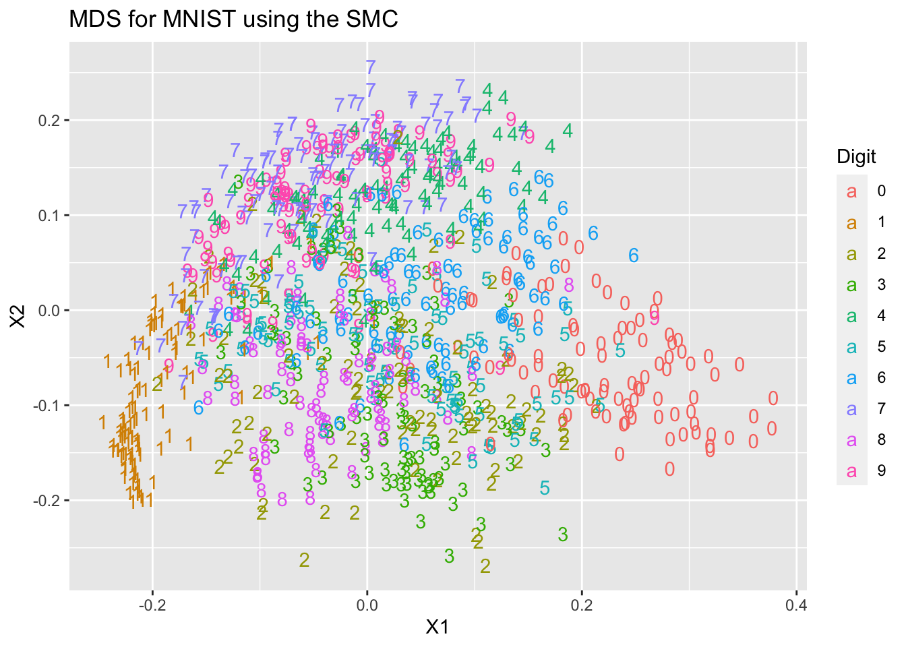
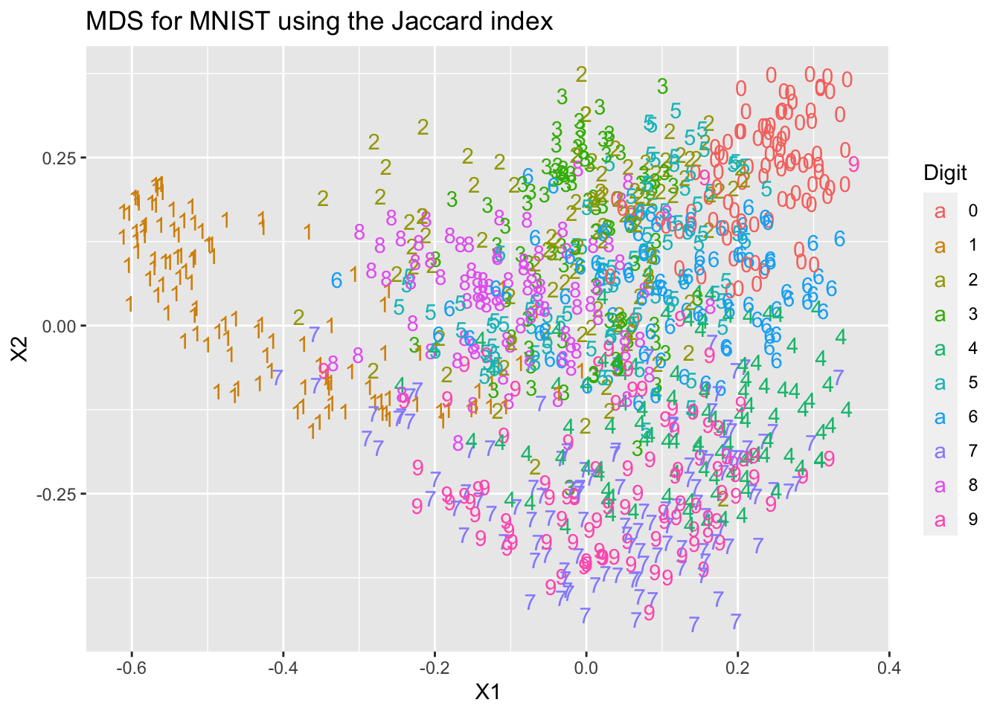

1.2 Similarity measures
So far we have presented classical MDS as starting with a distance (or dissimilarity) matrix \(\mathbf D=(d_{ij})_{i,j=1}^n\). In this setting, the larger \(d_{ij}\) is, the more distant, or dissimilar, object \(i\) is from object \(j\). We then convert \(\mathbf D\) to a centred inner product matrix \(\mathbf B\), where we think of \(\mathbf B\) as being a similarity matrix. Finally we find a truncated spectral decomposition for \(\mathbf B\):
\[\mathbf D\longrightarrow \mathbf B\longrightarrow \mathbf Z=\mathbf U\boldsymbol \Lambda^{\frac{1}{2}}.\]
Rather than using similarity matrix \(\mathbf B\) derived from \(\mathbf D\), we can use a more general concept of similarity in MDS.
Definition 1.4 A similarity matrix is defined to be an \(n \times n\) matrix \(\mathbf=(f_{ij})_{i,j=1}^n\) with the following properties:
- Symmetry, i.e. \(f_{ij} =f_{ji}\), \(i,j=1, \ldots , n\).
- \(f_{ij} \leq f_{ii}\) for all \(i,j=1, \ldots , n\) with \(j \not = i\).
Note that when working with similarities \(f_{ij}\), the larger \(f_{ij}\) is, the more similar objects \(i\) and \(j\) are.
Condition 1. implies that object \(i\) is as similar to object \(j\) as object \(j\) is to object \(i\) (symmetry).
Condition 2. implies that an object is at least as similar to itself as it is to any other object.
In this section, we consider the analysis of measures of similarity as opposed to measures of dissimilarity. We begin by showing that we can convert a positive semi-definite similarity matrix \(\mathbf F\) into a distance matrix \(\mathbf D\) and then into a centred inner product matrix \(\mathbf B\), allowing us to use the classical MDS approach from the previous section.
Proof. Firstly, note that as \(\mathbf F\) is a similarity matrix, \(f_{ii}+f_{jj}-2f_{ij}\geq 0\) by condition 2., and so the \(d_{ij}\) are all well-defined (i.e. real, not imaginary).
We will now show that Equation (1.7) holds. Let \(\mathbf A= -\frac{1}{2}\mathbf D\odot \mathbf D\) as in Equation (1.4). Then \[ a_{ij}=-\frac{1}{2}d_{ij}^2 =f_{ij}-\frac{1}{2}(f_{ii}+f_{jj}). \]
Define \[ t=n^{-1}\sum_{i=1}^n f_{ii}. \] Then, summing over \(j=1, \ldots , n\) for fixed \(i\), \[ \bar{a}_{i+}=n^{-1}\sum_{j=1}^n a_{ij} = \bar{f}_{i+}-\frac{1}{2}(f_{ii}+t); \] similarly, \[ \bar{a}_{+j}=n^{-1}\sum_{i=1}^n a_{ij}=\bar{f}_{+j}-\frac{1}{2}(f_{jj}+t), \] and also \[ \bar{a}_{++}=n^{-2}\sum_{i,j=1}^n a_{ij}=\bar{f}_{++}-\frac{1}{2}(t+t). \] Recall property (vii) from Section ??: \[ b_{ij}=a_{ij}-\bar{a}_{i+}-\bar{a}_{+j}+\bar{a}_{++} \] noting that \(\mathbf A\) is symmetric. Thus \[\begin{align*} b_{ij}&=f_{ij}-\frac{1}{2}(f_{ii}+f_{jj})-\bar{f}_{i+}+\frac{1}{2}(f_{ii}+t)\\ & \qquad -\bar{f}_{+j}+\frac{1}{2}(f_{jj}+t) +\bar{f}_{++}-t\\ & =\qquad f_{ij}-\bar{f}_{i+}-\bar{f}_{+j}+\bar{f}_{++}. \end{align*}\] Consequently, \(\mathbf B=\mathbf H\mathbf F\mathbf H\), again using property (vii) from Section ??.
So we’ve shown that \(\mathbf B= \mathbf H\mathbf F\mathbf H\). It only remains to show \(\mathbf D\) is Euclidean. Since \(\mathbf F\) is positive semi-definite by assumption, and \(\mathbf H^\top =\mathbf H\), it follows that \(\mathbf B=\mathbf H\mathbf F\mathbf H\) must also be positive semi-definite. So by Theorem 1.1 \(\mathbf D\) is a Euclidean distance matrix.1.2.1 Binary attributes
One important class of problems is when the similarity between any two objects is measured by the number of common attributes. The underlying data on each object is a binary vector of 0s and 1s indicating absence or presence of an attribute. These binary vectors are then converted to similarities by comparing which attributes two objects have in common.
We illustrate this through two examples.
Example 4
Suppose there are 4 attributes we wish to consider.
- Attribute 1: Carnivore? If yes, put \(x_1=1\); if no, put \(x_1=0\).
- Attribute 2: Mammal? If yes, put \(x_2=1\); if no, put \(x_2=0\).
- Attribute 3: Natural habitat in Africa? If yes, put \(x_3=1\); if no, put \(x_3=0\).
- Attribute 4: Can climb trees? If yes, put \(x_4=1\); if no, put \(x_4=0\).
Consider a lion. Each of the attributes is present so \(x_1=x_2=x_3=x_4=1\). Its attribute vector is \(\begin{pmatrix} 1&1&1&1\end{pmatrix}^\top\).
What about a tiger? In this case, 3 of the attributes are present (1, 2 and 4) but 3 is absent. So for a tiger, \(x_1=x_2=x_4=1\) and \(x_3=0\) or in vector form, its attributes are \(\begin{pmatrix} 1&1&0&1\end{pmatrix}^\top\).
How might we measure the similarity of lions and tigers based on the presence or absence of these four attributes?
First form a \(2 \times 2\) table as follows. \[ \begin{array}{cccc} &1 &0\\ 1& a & b\\ 0& c & d \end{array} \] Here \(a\) counts the number of attributes common to both lion and tiger; \(b\) counts the number of attributes the lion has but the tiger does not have; \(c\) counts the number of attributes the tigher has that the lion does not have; and \(d\) counts the number of attributes which neither the lion nor the tiger has. In the above, \(a=3\), \(b=1\) and \(c=d=0\).
How might we make use of the information in the \(2 \times 2\) table to construct a measure of similarity? There are two commonly used measures of similarity.
The simple matching coefficient (SMC) counts mutual absence or presence and compares it to the total number of attributes: \[\begin{equation} \frac{a+d}{a+b+c+d}. \tag{1.8} \end{equation}\] It has a value of \(0.75\) for this example.
The Jaccard similarity coefficient only counts mutual presence and compares this to the number of attributes that are present in at least one of the two objects: \[ \frac{a}{a+b+c}. \] This is also 0.75 in this example.
Although the Jaccard index and SMC are the same in this case, this is not true in general. The difference between the two similarities can matter. For example, consider a market basket analysis where we compare shoppers. If a shop sells \(p\) different products, we might record the products purchased by each shopper (their ‘basket’) as a vector of length \(p\), with a \(1\) in position \(i\) if the shopper purchased object \(i\), and \(0\) otherewise.
The basket of most shoppers might only contain a small fraction of all the available products (i.e. mostly 0s in the attribute vector). In this case the SMC will usually be high when comparing any two shoppers, even when their baskets are very different, as the attribute vectors are mostly \(0\)s. In this case, the Jaccard index will be a more appropriate measure of similarity as it only looks at the difference between shoppers on the basis of the goods in their combined baskets. For example, consider a shop with 100 products and two customers. If customer A bought bread and beer and customer B bought peanuts and beer, then the Jaccard similarity coefficient is \(1/3\), but the SMC is \((1+97)/100=0.98\).
In situations where 0 and 1 carry equivalent information with greater balance across the two groups, the SMC may be a better measure of similarity. For example, vectors of demographic variables stored in dummy variables, such as gender, would be better compared with the SMC than with the Jaccard index since the impact of gender on similarity should be equal, independently of whether male is defined as a 0 and female as a 1 or the other way around.
There are many other possible ways of measuring similarity. For example, we could consider weighted versions of the above if we wish to weight different attributes differently.
Example 5
Let us now consider a similar but more complex example with 6 unspecified attributes (not the same attributes as in Example 1) and 5 types of living creature, with the following data matrix, consisting of zeros and ones. \[ \begin{array}{lcccccc} &1&2&3&4&5&6\\ Lion&1&1&0&0&1&1\\ Giraffe&1&1&1&0&0&1\\ Cow&1&0&0&1&0&1\\ Sheep&0&0&0&1&0&1\\ Human&0&0&0&0&1&0 \end{array} \] Suppose we decide to use the simple matching coefficient (1.8) to measure similarity. Then the following similarity matrix is obtained. \[ \mathbf F=\begin{array}{lccccc} &\text{Lion}&\text{Giraffe}&\text{Cow}&\text{Sheep}&\text{Human}\\ Lion&1&2/3&1/2&1/2&1/2\\ Giraffe&2/3&1&1/2&1/2&1/6\\ Cow&1/2&1/2&1&1&1/3\\ Sheep&1/2&1/2&1&1&1/3\\ Human&1/2&1/6&1/3&1/3&1 \end{array} \] It is easily checked from the definition that \({\mathbf F}=(f_{ij})_{i,j=1}^5\) is a similarity matrix.
Let’s see how we would do this in R.
animal <- matrix(c(1,1,0,0,1,1,1,1,1,0,0,1,1,0,0,1,0,1,0,0,0,1,0,1,0,0,0,0,1,0), nr=5, byrow=TRUE)
rownames(animal) <- c("Lion", "Giraffe", "Cow", "Sheep", "Human")
colnames(animal)<-paste("A", 1:6, sep="")
SMC <- function(x,y){
sum(x==y)/length(x)
}
# SMC(animal[1,], animal[2,]) # check this gives what you expect
n=dim(animal)[1]
F_SMC = outer(1:n,1:n, Vectorize(function(i,j){SMC(animal[i,], animal[j,])}))
# we could do this as a double loop, but I've used the outer function
# here.We can use the dist function in R to compute this more easily. The dist function requires us to specify which metric to use. Here, we use the \(L_1\) distance, which is also known as the Manhattan distance. We have to subtract this from the largest possible distance, which is 6 in this case, to get the similarity, and then divide by 6 to get the SMC.
## Lion Giraffe Cow Sheep Human
## Lion 1.0000000 0.6666667 0.5000000 0.3333333 0.5000000
## Giraffe 0.6666667 1.0000000 0.5000000 0.3333333 0.1666667
## Cow 0.5000000 0.5000000 1.0000000 0.8333333 0.3333333
## Sheep 0.3333333 0.3333333 0.8333333 1.0000000 0.5000000
## Human 0.5000000 0.1666667 0.3333333 0.5000000 1.0000000The Jaccard index can be computed as follows:
jaccard = function(x, y) {
bt = table(y, x)
return((bt[2, 2])/(bt[1, 2] + bt[2, 1] + bt[2, 2]))
}
# jaccard(animal[1,], animal[2,]) # check this gives what you expect
F_jaccard = outer(1:n,1:n, Vectorize(function(i,j){jaccard(animal[i,], animal[j,])}))Again, we can compute this using dist, but this time using the binary distance metric. See the help page ?dist to understand why.
## Lion Giraffe Cow Sheep Human
## Lion 1.00 0.6 0.4000000 0.2000000 0.25
## Giraffe 0.60 1.0 0.4000000 0.2000000 0.00
## Cow 0.40 0.4 1.0000000 0.6666667 0.00
## Sheep 0.20 0.2 0.6666667 1.0000000 0.00
## Human 0.25 0.0 0.0000000 0.0000000 1.00To do MDS on these data, we need to first convert from a similarity matrix \(F\) to a distance matrix \(D\). We can use the following function to do this:
FtoD <- function(FF){
n = dim(FF)[1]
D <- matrix(nr=n,nc=n)
for(ii in 1:n){
for(jj in 1:n){
D[ii,jj] <- sqrt(FF[ii,ii]+FF[jj,jj]-2*FF[ii,jj])
}
}
return(D)
}Let’s now do MDS, and compare the results from using the SMC and Jaccard index.

So we can see the choice of index has made a difference to the results.
1.2.2 Example: Classical MDS with the MNIST data
In section ?? we saw the results of doing PCA on the MNIST handwritten digits. In the final part of that section, we did PCA on a selection of all the digits, and plotted the two leading PC scores, coloured by which digit they represented.
Let’s now do MDS on the same data. We know that if we use the Euclidean distance between the image vectors, then we will be doing the same thing as PCA. So let’s instead first convert each pixel in the image to binary, with a value of 0 if the intensity is less than 0.3, and 1 otherwise. We can then compute a similarity matrix using the SMC and Jaccard indices.
load('mnist.rda')
source('mnisttools.R')
X<- mnist$train$x[1:1000,]
Y<- (X>0.3)*1. # multiply by 1 to convert from T/F to a 1/0
n=dim(Y)[1]
p=dim(Y)[2]
F_SMC=(p-as.matrix(dist(Y, method="manhattan", diag = TRUE, upper = TRUE)))/p
F_Jaccard = 1-as.matrix(dist(Y, method="binary", diag=TRUE, upper=TRUE))
mds1=data.frame(cmdscale(FtoD(F_SMC)))
mds2=data.frame(cmdscale(FtoD(F_Jaccard)))We will do as we did before, and plot the coordinates coloured by the digit each point is supposed to represent. Note that we have not used these digit labels at any point.
Digit = as.factor(mnist$train$y[1:1000])
library(ggplot2)
ggplot(mds1, aes(x=X1, y=X2, colour=Digit, label=Digit))+
geom_text(aes(label=Digit))+ ggtitle("MDS for MNIST using the SMC") 
ggplot(mds2, aes(x=X1, y=X2, colour=Digit, label=Digit))+
geom_text(aes(label=Digit))+ ggtitle("MDS for MNIST using the Jaccard index") 
You can see that we get two different representations of the data that differ from each other, and from the PCA representation we computed in Chapter ??.